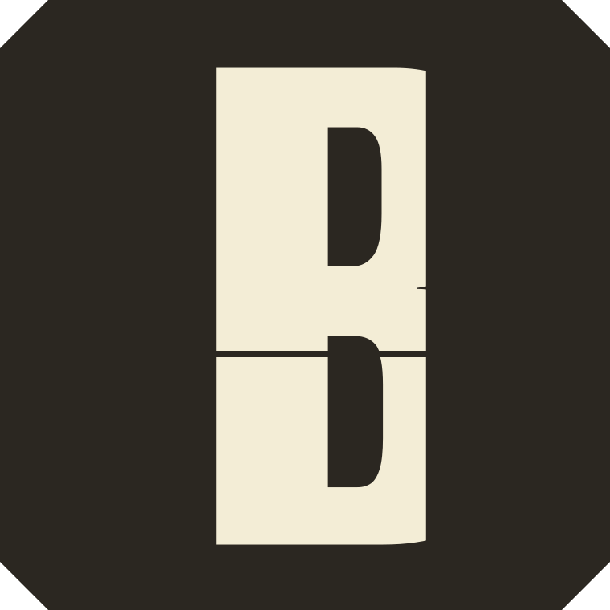
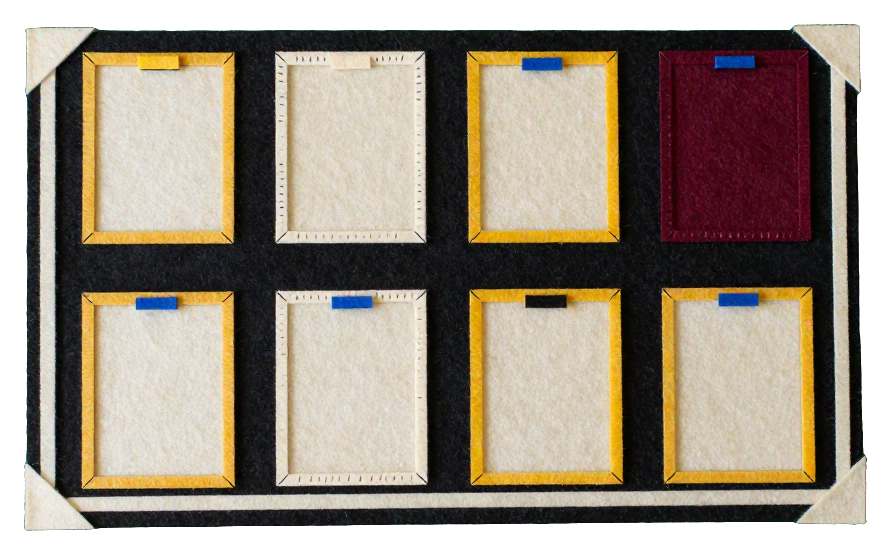

Brand sheet, 27 October 2026, direction A. The tabletop flip scoreboard at mid-court: one dark board on a lit maple floor. Cream flaps for games, yellow flaps for the one number that matters. Family dimensional-tactile. One theme.
The world it came from


Colour
One theme. A dark-room variant was built and cut: the board is one object and stays dark either way, so the variant changed only the margin, and four critics in a row read that as unfinished. Northside's maroon #79242F belongs to the club's own pages, not to this board.
Refused. Red and green LED digits, glow, slate greys, pure white, pills, discs, blur, a chat panel, stat cards, tracked-caps labels over numbers, triangles as decoration.
Type
16 of 34 games paid $1,840 paid out
Every other count: a line of Alumni numerals with words in Schibsted.Game 9 is held for SamSchibsted Grotesk 700: headings, sentence case, no full stop
Game 34 final, Fairview v Bayview. Three officials on the sheet, all on the card. Paid $115.Schibsted Grotesk 400: body and the agent's lines
Wordmark and mark


Alumni Sans 800, set as one path per glyph, a plain B. The mark carries the cut: the B split below its waist bar like a flap, its lower half caught a few units low. The mark lives on app icons and the favicon; the header carries the wordmark alone.
The device: a game in its four states
Ghost: not started (the shape before it is lit). Cream edge: in play. Cream: paid, the bar is seconds to payout out of 60. Caught mid-flip: held for Sam. No hue carries a state; the flip is the one motion.
Illustration in cut felt

Cut-felt appliqué with running stitches, the way a gym's pennants and chenille patches are made. Generated locally on Z-Image Turbo from one art direction. It never sits on the board screen: it belongs to empty, error and first-run states and the share image, with the credit "Illustrations made with AI, held to one art direction".
Icons in one hand
Not used on the board yet; kept for the game detail and the error states.
Voice: the scorer at the table
- Every official paid at the final buzzer
- Game 9 is held for Sam. Nothing is paid until you choose.
- No games on this court today.
- PayPal did not answer. Game 41 stays owed, and the next try is at 10:40.
- Paid $115 to Official A, B and C.
The banned phrases are in voice.md and checked by charter.json. The laws are in CHARTER.md.